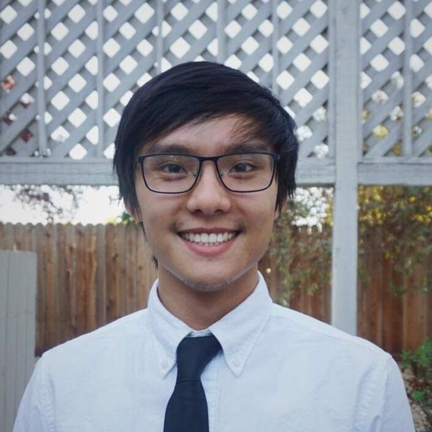

<div class="about">
  
  <div class="intro">
    <h1>Hey there! I'm Jimmy Hoang,</h1>
    <p> an EE undergrad at UC Davis and also bus driver for Unitrans! I was originally accepted as a Computer Science Engineer, but I found the hardware aspect to be much more intriguing than software. However, I do enjoy programming. Just not to the level where you could spend hours debugging, only to find that the error was due to a single missing character or typo, and then still want to code. So, I switched to Electrical Engineering and am now most interested in physical and digital electronics. Currently, I am looking for opportunities for hands-on work and experence with electrical devices and hardware. Some other facts about me is that I am from Stockton, CA, and I like cats, listening to rock, and trying new things. I would say that I am an open-minded individual with a positive attitude and drive to learn. During my free time, I enjoy bowling, gaming, or tinkering with things I find cool. You can find my contact information on my <a href="/cv">resume</a>.</p>
  </div>
</div>
